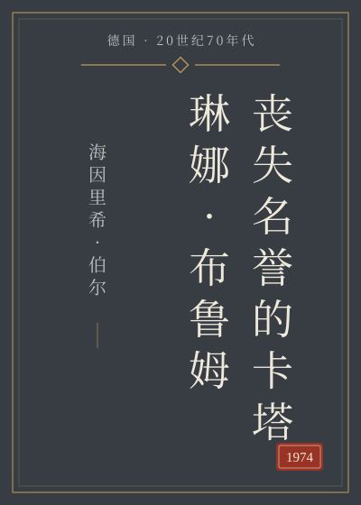
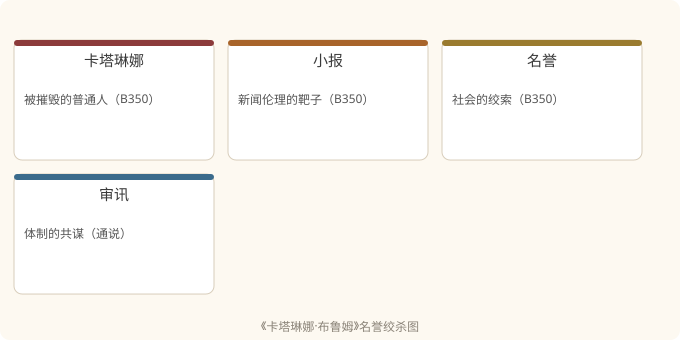

丧失名誉的卡塔琳娜·布鲁姆
一、基本信息
| 作者 | 海因里希·伯尔 |
|---|---|
| 成书/出版 | 1974年（Britannica B350：The Lost Honour of Katharina Blum (1974)） Heinrich Boll — Encyclopaedia Britannica（百科全书） |
| 国别/地区 | 德国 |
| 时代 | 现当代 · 20世纪70年代 |
| 体裁 | 中篇小说 |
| 语言 | 德语 |

《卡塔琳娜·布鲁姆》名誉绞杀图（主题·结构图）
二、创作背景
Britannica（B350）：'attacked modern journalistic ethics'（抨击现代新闻伦理）与德国价值观。
Britannica（B350）：伯尔——'personal responsibility'的反复主题；1972诺奖。
题材（通说待核）：无辜女子被小报摧毁——'名誉'的媒体绞杀。
三、内容脉络
'新闻自由'如何毁灭一个普通人：报道、审讯与名誉的丧失（B350：attacked modern journalistic ethics；情节通说待核）。
暴力与媒体的共谋（通说待核）。
四、主要人物表
| 人物 | 身份 | 说明 |
|---|---|---|
| 卡塔琳娜·布鲁姆 | 女管家 | （B350 书名人物） |
| 托特格斯 | 记者 | （通说待核，B350未载） |
五、主题与艺术特点
- 新闻伦理的批判（B350）。
- '名誉'的社会机制（B350 书名）。
- 个人责任（B350：recurring focus on personal responsibility）。
六、影响与评论
- Britannica：'attacked modern journalistic ethics'（B350）。
Heinrich Boll — Encyclopaedia Britannica（百科全书） - Britannica：1977年电影改编说待核（B348式'多部改编'未载本作——不采）。
Heinrich Boll — Encyclopaedia Britannica（百科全书）
七、阅读建议
难点
- 1970年代西德恐怖主义背景（巴德尔-迈因霍夫说待核）。
- 新闻文体拼贴（通说待核）。
- 《丧失名誉的卡塔琳娜·布鲁姆》中译本（人民文学等——通说待核）。
- 德文原版。
伯尔进阶；与《小丑之见》对读。
八、待核实
- 托特格斯人名核对（B350未载）。
- 1977年施隆多夫电影说待核。
- '新闻拼贴'文体细节待核。
本页主要来源
海因里希·伯尔的其他收录作品：小丑之见丧失名誉的卡塔琳娜·布鲁姆